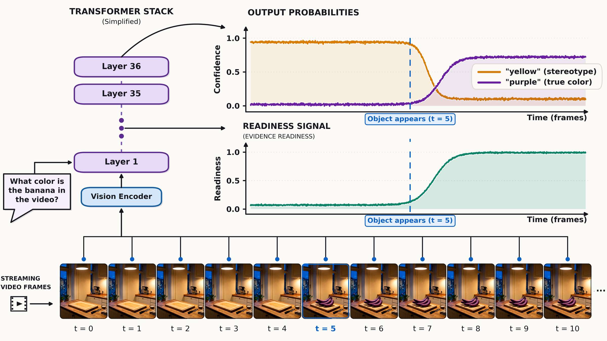
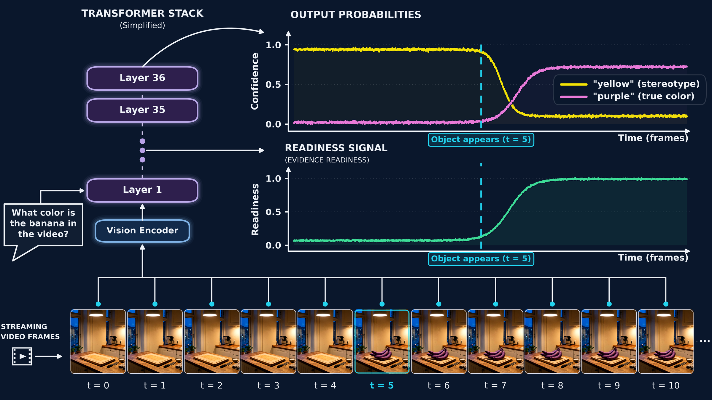

Interpretability of streaming video-language models
Have I Seen Enough?
Frozen Video-Language Models Encode Evidence Readiness
1INSIGHT Lab, Ben-Gurion University of the Negev, Israel
2Ben-Gurion University of the Negev, Israel
TL;DR Frozen VideoLLMs already compute whether the evidence for the current question has arrived. A linear probe on the residual stream reads it in every model we tested. It flips when only the question changes, it is not the model's confidence, and it tells a streaming model when to answer.


Abstract ShowHide
Streaming video-language models must decide not only what to answer, but whether the evidence needed for the current question has arrived. Existing systems learn that decision as a separate trigger; we ask whether an unmodified model already computes it. We show that frozen VideoLLMs carry a linearly readable evidence-readiness signal, labelled from timestamped evidence rather than from model output. It decodes in all seven models of a shared byte-identical evaluation (AUROC 0.733–0.905 under the strictest not-ready sampling, where a fitted clock is near chance), and a probe fitted without any of a benchmark family's footage still reads that family. It is question-conditioned: on byte-identical windows, changing only the question reverses the readout on 66.1% of pairs, while every question-blind control is at chance by construction. The model can answer incorrectly and still encode readiness: AUROC remains 0.722 among wrong answers. Readiness also beats uncertainty estimators and their supervised combination on latency-matched answer selection, and tracks independent human judgments more closely than confidence. Released streaming triggers are also linear readouts, yet a trained trigger read on its own base model's activations is approximately orthogonal to readiness and decodes it far less accurately than a probe. We turn the readout into Readiness Gating, an answer-timing policy that improves accuracy by up to +9.75 pp at matched video duration with negligible computational overhead. How much it gains varies with the accuracy headroom the task makes available: across 26 configurations the gain tracks that headroom, and an intervention that moves it over identical pixels moves the gain with it.
Models that encode it
7 / 7
Readiness AUROC 0.733–0.905 on byte-identical inputs where a fitted clock is near chance.
Swap only the question
66.1%
of pairs reverse the readout on identical pixels. Question-blind controls sit at chance by construction.
Among wrong answers
0.722
AUROC. The model can fail the question and still encode that its evidence is there.
Readiness Gating
+9.75pp
accuracy over confidence-gated answering at matched video duration, for a 1.06 µs dot product.
The question
Streaming changes what a model must decide
In an offline benchmark the whole clip is available before the question is answered. In a stream, the question may arrive before, during, or after the event that resolves it, so a system must decide both what to answer and whether it has seen enough yet.
Existing streaming systems learn a readiness token, response trigger, auxiliary head, or activation model for that second decision. We ask whether the state they need is already computed inside a frozen VideoLLM. Answering that means separating three things that video QA usually conflates:
What we read
Evidence availability
A property of the delivered video relative to the question. We label it from question-specific evidence timestamps, fixed before any model output is seen.
Output distribution
Confidence
A property of the answer probabilities. Scene and language priors can make it high before the relevant pixels exist.
End result
Correctness
Also depends on perception and reasoning. With the evidence on screen, the model can still get it wrong.
Nothing in how these models are trained asks them to represent readiness: next-token prediction supervises what to say, not whether the frames delivered so far settle the question. A model could reach high accuracy on complete clips without ever forming it. Frozen VideoLLMs form it anyway.
Method
Measuring evidence readiness
For each question we label readiness from the benchmark's evidence timestamps and the frames actually shown to the model, independently of its answer. We then freeze the VideoLLM and ask whether a linear readout of its residual stream recovers that label.
Labels come from the evidence, not from the model
Fixed-duration windows (16 s, 32 frames, advanced every 2 s) against one question's evidence
Evidenceannotated segments and their hull
Window beforecovers none of the evidence
not ready
Partial windowexcluded from probe fitting
partial
Containing windowcovers the whole evidence hull
ready ✓
Window aftercovers none of the evidence
not ready
Every window has the same duration, so window length cannot signal readiness. Drawing not-ready windows from both sides of the evidence removes the timing shortcut: a fitted elapsed-time clock falls from AUROC 0.950 (before-only sampling) to 0.527. Growing prefixes [0, t] are also used, labelled by evidence onset.
The readout
A probe tests linear availability. It does not teach readiness.
The VideoLLM stays frozen (Qwen3-VL-8B unless stated). We read the residual stream at the final prompt token, just before answer generation, at layers addressed by fraction of depth. An L2-regularized logistic regression is fitted with nested cross-validation; whole videos are held out, and intervals are cluster bootstraps over videos.
The check
People, not only timestamps
Evidence timestamps mark where an answer is shown, not necessarily when it first becomes answerable. Three raters unaffiliated with this work judged 900 blinded screens showing the model's exact input frames (Cohen's κ = 0.717 between the two primary raters).
The crossed quad: only question–evidence alignment survives
Window 1holds A's evidence
Window 2holds B's evidence
Question Aasks about A
readyA's evidence present
not readywrong evidence
Question Basks about B
not readywrong evidence
readyB's evidence present
DiD = [s(A,W1) − s(A,W2)] − [s(B,W1) − s(B,W2)]
Two questions from one video with disjoint evidence are crossed with two windows, each containing exactly one question's evidence. Every window is ready for one question and not ready for the other, and both inner differences are taken on byte-identical frames.
Any fixed question or window effect cancels. The difference-in-differences is 0 for any readout that ignores the question, and any statistic of the pixels alone (elapsed time, motion, brightness, pooled vision features) receives the same positive and negative inputs and is at AUROC 0.5 by construction. What survives is the alignment between which evidence is present and which question is asked.
Findings
A computed, question-conditioned readiness signal
Readiness decodes even when prior knowledge cannot answer. We composite 119 recoloured cue objects into HD-EPIC cooking footage, so their usual colours are unreliable guides to “what colour is the object?” With the cue object held out, readiness decodes at AUROC 0.985 [0.965, 0.999] against a grouped shuffle of 0.524 at constant frame count.
Controlled cues, same frames
98.1%
Swapping “what colour is A?” for “what colour is B?” reverses the readiness score on 98.1% of 520 pairs.
Natural footage, NExT-GQA crossed quads
66.1%
Across 1,208 quads, changing only the question reverses the readout on 66.1% of swaps and shifts model accuracy by +14.0 pp in the predicted direction (77.9% vs 63.9%). Readiness AUROC is 0.727 while every window-only statistic is 0.500; the DiD is 0.429 [0.378, 0.482] and replicates on ST-Evidence-MCQ.
Readiness beats every competing readout, on all nine tests
Held-out AUROC on Qwen3-VL-8B; labels come from evidence timestamps, not model correctness
Data table
Each row is a separate test, not one scale: rows differ in geometry and strictness, so read each AUROC against the markers on its own row. Readiness exceeds all three comparisons on every row by 0.133 to 0.220. † Questions constructed from the source's annotations rather than shipped with it.
On natural footage, the signal rises with how much evidence has arrived. On ST-Evidence-Gen, where a question has 1–11 evidence segments, readiness rises with the fraction of segments seen even after controlling for video progress (partial ρ = 0.378). A donor question on byte-identical frames collapses within-arm AUROC from 0.832 to 0.546.
Human judgments agree. On the same windows, raters recover the timestamp labels at AUROC 0.681–0.778, and the probe recovers them at 0.671–0.791. The raters' verdicts also predict answerability: model accuracy is 16.5, 36.9 and 28.0 pp higher on windows they call ready.
It emerges with depth, in every model we tested
Seven models read one frozen manifest of Oops! windows (1,204 windows over 301 videos) with byte-identical frames and option order. With not-ready windows drawn from both sides of the evidence, readiness AUROC runs 0.733–0.905, and none of the 28 model-by-sampling measurements falls lower. It reads 0.500 at the raw input embedding and peaks between 0.5 and 0.8 of depth in all seven, so question-specific availability appears only after vision and language interact. The models' own answer probabilities rank the same rows at only 0.514–0.651.
Qwen3-VL-2BQwen3-VL-8BQwen3-VL-32B
LLaVA-OV-1.5-8BGLM-4.1V-9BIdefics3-8B
Pixtral-12B
Ranking transfers to unseen footage; the threshold does not. Fitted only on ST-Evidence-Gen footage and read on OVO-Bench's 42 unseen videos without refitting, the probe reaches AUROC 0.748 [0.689, 0.799], about 90% of the 0.832 a target-fitted probe reaches, while the obvious proxies point the wrong way (elapsed time 0.451, confidence 0.350). The operating point does not carry over, but refitting only the threshold on eight target videos recovers 86.5% accuracy. Holding out whole benchmark families, one probe reads each unseen family at 0.653–0.761, on average 92% of that family's own fitted ceiling.
Readiness is not confidence, and not correctness
Within confidence
0.688–0.757
Readiness AUROC inside each of six fixed confidence bins. Residualizing the score on confidence moves AUROC by at most 0.0002 on every pool.
Within wrong answers
0.722 wrong 0.753 correct
Across 4,800 HD-EPIC examples at 53.5% model accuracy (same-example clock 0.506). On HERBench, availability decodes at 0.970 among 2,169 present-but-wrong examples.
Against people
0.871–0.944 vs 0.643–0.691
Scored against the 900 human readiness verdicts, the probe far outranks the model's own confidence. An external multimodal LLM judge, asked directly, reaches only 0.576–0.629.
Encoded, but left unspoken
26×
InternVL3.5-8B and LLaVA-OneVision-7B have indistinguishable readouts (AUROC 0.720 each) on identical rows, yet differ 26× in how often they pick an explicit “not enough evidence yet” option.
Injected at one site, the direction turns deferral into an answer. Adding a rank-32 readiness subspace at a mid-depth residual site in Qwen3-VL-8B produces 101 deferral-to-answer flips, against 3 for a wrong-target direction of equal magnitude, monotone across four doses and above all 35 alternative directions. InternVL3.5-8B replicates it (91 flips against 7). This establishes sufficiency at the tested site, not necessity.
Using the signal
Readiness Gating: deciding when to answer
Probing shows the state is present; Readiness Gating acts on it. Both modes reuse a residual vector the model already computes and add a 1.06 µs dot product to a 251 ms forward pass. A checkpoint keeps a letter and a scalar, not a key-value cache.
Mode 1
Gated stopping
Answer at the first checkpoint where readiness and confidence both clear one threshold selected on training folds.
Mode 2
Gated selection
At a fixed deadline, return the answer cached at the highest-readiness window so far. Every method sees the same video.
Schematics. Bar height is the readiness score at each checkpoint.
HERBench shot identification
+9.75pp
[+8.19, +11.54]
Oops!
+6.03pp
[+3.62, +8.61]
ActivityNet-Captions, evidence-sensitive
+4.66pp
[+2.84, +6.54]
Δ*: accuracy of gated stopping over the same rule on confidence alone, matched on video seconds. It measures what readiness adds to confidence, not what it beats. Gated selection beats confidence-driven selection in 24 of 26 configurations, with intervals excluding zero in 15.
Gains track the headroom a task leaves
The attainable band is the accuracy gap between an evidence oracle and answering at the end. On the ActivityNet arm we hold videos, windows, frames, labels and answer positions fixed and replace only the distractor options: end-of-video accuracy moves from 35.8% to 79.5%, the band shrinks from 34.5 to 17.5 pp, and the gain falls with it from +4.66 to +1.10 pp, a 4.2× contrast on identical pixels.
Comparison
Released streaming triggers read something else
Streaming systems decide when to respond with learned heads, and in the released systems we examined those heads are linear residual-stream readouts, the same kind of object as our probe. Applied zero-shot, they do not recover evidence readiness. They are not being driven incorrectly: through the same code, MMDuet reaches R@IoU=0.5 of 53.2 on its own Charades-STA benchmark, against 42.4 originally reported.
Released triggers scored against evidence-readiness labels
At a common deadline every arm returns the answer from its own highest-scoring window
| Monitor | HERBench shot-ID | ActivityNet, same-action | ||
|---|---|---|---|---|
| Readiness AUROC | Selection acc. | Readiness AUROC | Selection acc. | |
| Answer at end (no selection) | — | 0.251 | — | 0.358 |
| Evidence oracle | — | 0.897 | — | 0.703 |
| Readiness Gating (ours) | 0.926 | 0.763 | 0.753 | 0.647 |
| Confidence | 0.749 | 0.495 | 0.594 | 0.540 |
| Elapsed time | 0.507 | — | 0.436 | — |
MMDuet relevance (zero-shot) | 0.513 | 0.276 | 0.484 | 0.413 |
MMDuet informative (zero-shot) | 0.532 | 0.325 | 0.496 | 0.433 |
Dispider silent (zero-shot) | 0.477 | 0.289 | — | — |
Our probe is fitted on each dataset's training folds and evaluated on held-out folds; the released triggers are applied without fitting. This tests transfer to readiness labels, not which complete streaming system is best. Dispider decides once per 16 s, too coarse for the ActivityNet ladder.
Same activations, same rows
0.843 vs 0.607
Removing the substrate difference: on MMDuet's own base-model activations, a probe fitted on 1,204 balanced Oops! windows reads 0.843, while MMDuet's trained relevance direction reads 0.607.
Geometry
|cos| = 0.016
The trained trigger direction is statistically indistinguishable from orthogonal to readiness (random-direction null, 99th percentile 0.043). The head trained for relevance is not the better readiness readout.
Scope
Limitations
- Policy results are offline replays, complemented by a live-decoding audit; long-stream latency and memory growth are out of scope.
- Outside the explicit transfer tests, probes are fitted within each benchmark on video-disjoint folds. Ranking transfers, so gated selection carries over, but gated stopping needs an operating point that can fail under label shift.
- Evidence timestamps mark where the answer is shown, which can be later than when it becomes inferable. Human ratings measure this gap, but the labels remain timestamp-based.
- The trigger comparison establishes that a foreign trigger does not transfer, not that our policy is a better complete system.
- The causal evidence covers one intervention site and two models, and establishes sufficiency there rather than necessity.
Cite
BibTeX
@article{benami2026seenenough,
title = {Have I Seen Enough? Frozen Video-Language Models
Encode Evidence Readiness},
author = {Ben-Ami, Dan and Cohen, Kobi and Baskin, Chaim},
journal = {arXiv preprint arXiv:2610.08560},
year = {2026},
url = {https://arxiv.org/abs/2610.08560}
}